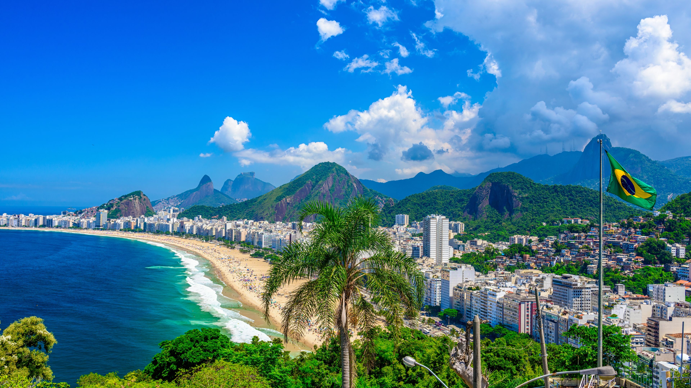
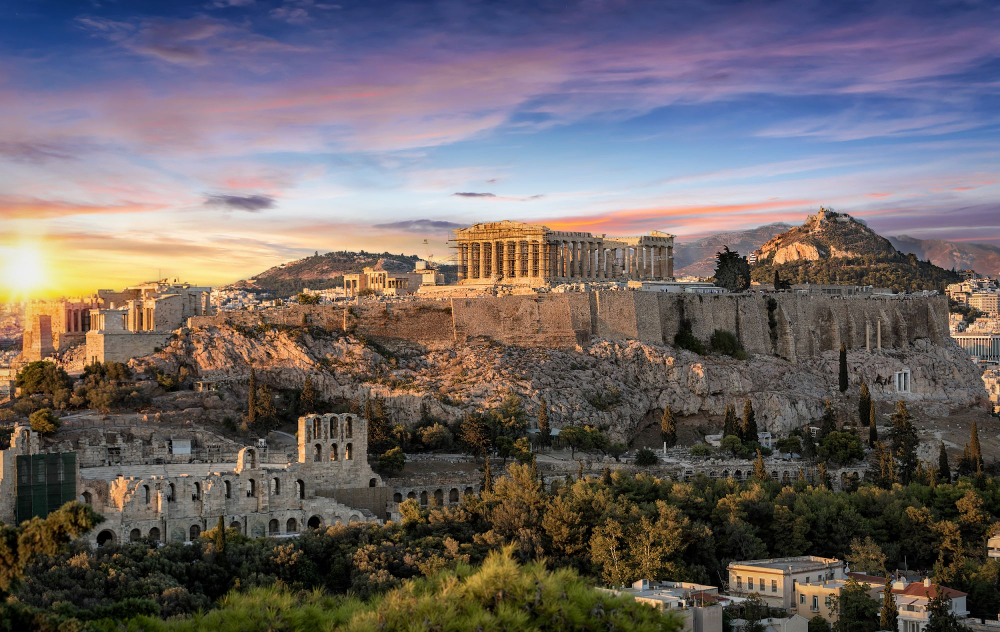
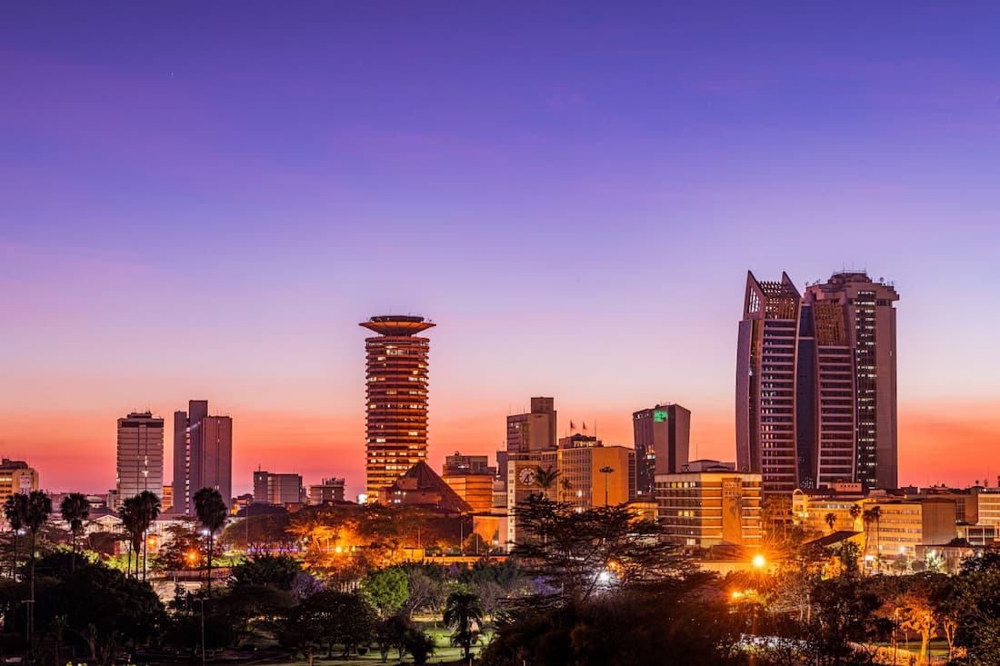
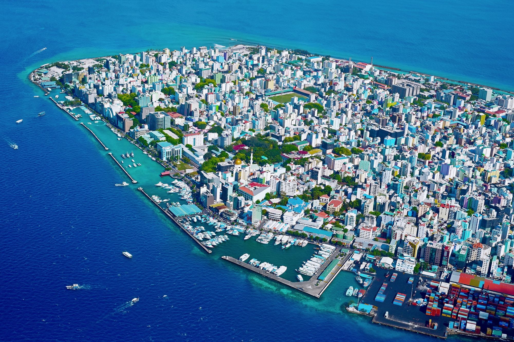

Primavera
Roma e Parigi sono piacevoli per passeggiare prima del caldo estivo; in Giappone la fioritura varia ogni anno e non è garantita in date precise.

Arte, borghi, montagne e cucina regionale, dalle Alpi al Mediterraneo.

Grandi musei, paesaggi diversi e tradizioni gastronomiche tutte da scoprire.

Città vivaci, architetture sorprendenti e coste affacciate su più mari.
Templi, quartieri contemporanei e paesaggi che cambiano con le stagioni.

Siti antichi, isole e villaggi dove il mare è sempre vicino.

Metropoli, parchi naturali e itinerari che attraversano paesaggi immensi.

Monumenti millenari, mercati e la vita che si sviluppa lungo il Nilo.

Templi, cucina profumata e spiagge tropicali da esplorare con calma.

Musica, foreste, grandi città e una straordinaria varietà di ecosistemi.

Grandi spazi, città costiere e una natura unica da rispettare e conoscere.

Savane, riserve naturali e coste dell'Oceano Indiano ricche di vita.

Atolli corallini e lagune: un viaggio da vivere con attenzione all'ambiente.
Nessuna destinazione trovata.

Italia · Circa 2,75 milioni di abitanti
Francia · Circa 2,10 milioni di abitanti

Spagna · Circa 3,30 milioni di abitanti

Giappone · Circa 14,00 milioni di abitanti

Grecia · Circa 665 mila abitanti

Stati Uniti · Circa 700 mila abitanti
Egitto · Circa 10,10 milioni di abitanti
Thailandia · Circa 5,50 milioni di abitanti

Brasile · Circa 2,80 milioni di abitanti

Australia · Circa 470 mila abitanti

Kenya · Circa 4,40 milioni di abitanti

Maldive · Circa 210 mila abitanti
Popolazioni indicative e arrotondate; i dati possono variare in base ai confini amministrativi e all'anno della stima.
Vivi il luogo
Piccole idee per andare oltre la lista dei monumenti e conoscere meglio una destinazione.
Scegli il momento
Indicazioni generali: clima ed eventi cambiano da una regione all'altra, quindi controlla le previsioni prima di prenotare.
Roma e Parigi sono piacevoli per passeggiare prima del caldo estivo; in Giappone la fioritura varia ogni anno e non è garantita in date precise.
Grecia e Maldive invitano a giornate di mare, ma valuta caldo, affollamento e condizioni stagionali locali prima di organizzare le attività.
Tokyo e le città italiane offrono occasioni per esplorare a piedi con temperature spesso più miti; verifica le condizioni del periodo scelto.
Egitto e Thailandia possono essere alternative per chi cerca temperature più calde: controlla le differenze climatiche tra le regioni e la stagione delle piogge.
Viaggiare con curiosità
Il caffè al banco è spesso una pausa breve e quotidiana; nomi e abitudini cambiano da regione a regione.
Treni e metropolitane sono centrali nella vita cittadina: osservare la segnaletica e le indicazioni locali aiuta a orientarsi.
In molte zone gli orari dei pasti sono più tardi rispetto a quelli italiani, ma variano secondo città, stagione e abitudini personali.
Nei mercati di alcuni paesi la contrattazione può far parte dello scambio, ma non è una regola universale: osserva il contesto e chiedi con cortesia.
Le usanze non sono uguali per tutti: considera queste note come spunti per informarti, non come regole applicabili a ogni persona o luogo.
Prima di partire
Stabilisci una spesa giornaliera per alloggio, pasti, trasporti e ingressi. Una stima essenziale può partire da circa 60–100 € al giorno, una fascia media da 120–220 €; comfort, città costose e alta stagione possono superare i 250 €. Sono importi orientativi a persona, senza voli: verifica i prezzi aggiornati della meta.
Confronta trasporto pubblico, pass turistici e trasferimenti dall'aeroporto. Per gli spostamenti tra città prenota in anticipo quando conviene e considera i tempi reali di viaggio.
Controlla le previsioni a ridosso della partenza. Porta scarpe comode, strati leggeri da combinare, protezione da sole o pioggia e un adattatore compatibile con la destinazione.
Verifica passaporto, eventuali visti, copertura sanitaria e avvisi di viaggio sulle fonti ufficiali. Informati su norme locali, abbigliamento richiesto nei luoghi di culto e comportamenti da evitare.
Costi, requisiti d'ingresso e condizioni di viaggio possono cambiare: controlla sempre le informazioni ufficiali prima della partenza.